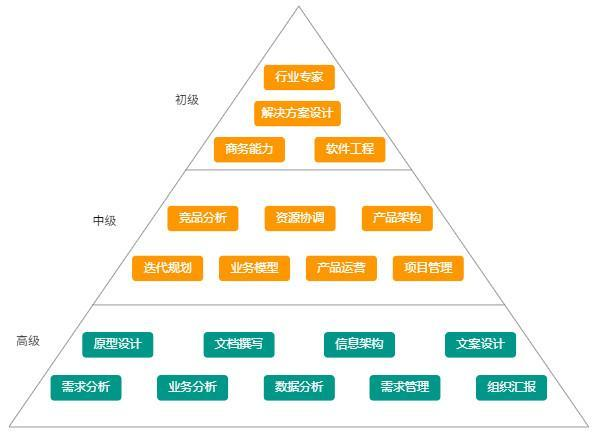
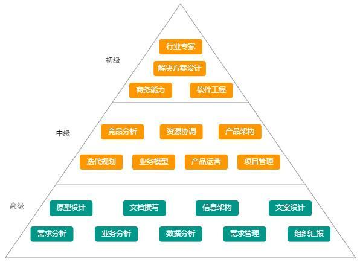

职业发展路径¶
什么样的人适合做产品经理？¶
1、喜欢体验各种新鲜事情，遇到不喜欢的设计有自己独特的想法；2、逻辑清晰，能用简短的语言描述复杂的事物；3、喜欢与人沟通，有很强的的同理心去揣测身边人的心理活动；4、对新奇的事物有新鲜感，喜欢追根刨底的问问题；5、喜欢发起辩论，用自己的思考和逻辑说服别人；6、注重细节体验，能从细节中发现问题，并对细节瑕疵不能忍。
实习生¶
理解产品可以从理解基础技术开始。
这里提到的基础技术包括了客户端技术分类，例如Android、iOS、H5或者微信小程序：它们各自的技术特点是什么。比如为什么开发Android和iOS应用的是两个不同的技术职能，而开发H5的是一个技术职能。
另外，产品实习生需要对产品底层的技术通信原理进行理解。
比如当我们使用客户端产品发送一条消息时，这条消息经过了哪些环节后被另一个客户端收到——这里就涉及了什么是服务端，客户端和服务端的主要职能和通信机制是什么。先从大局观上对互联网产品的技术框架有一个基本认知。
建立互联网产品技术认知，划分清楚技术职能，了解各技术的特点和应用场景，就能胜任最基本的产品工作了。
产品经理¶
过年的时候，大家会在微信收发红包，微信红包就是一个具体的功能模块，如果你在微信做产品经理，那或许就要从负责一个功能模块开始历练了。
要能建立完整的技术基础概念认知，能从技术角度对产品方案进行初步评估和判断。
面试考核的重点：
执行力：初级产品经理最重要的就是执行力，因为大部分的情况下，产品的大方向不由他控制，只负责局部的数据，用户需求往往比较明显，所以对于需求的把握能力要求并不高，能深度的做好用户调研和反馈，快速的迭代并提升数据就可以了，而以上的这些，就要求应聘者有强大的内驱力，可以有力的推动项目内成员达成目标。
综合能力：以逻辑能力、沟通表达能力为主，逻辑能力是PM安家立命之本，对于初级产品经理来说，能不能理清楚功能模块和整个产品的关系非常重要，除此之外，功能的设计和迭代的节奏，也非常考验产品经理的逻辑能力，一个页面会遇到几种使用场景？不同场景之间的关系是什么？如何让一个页面同时满足多种入口和多种需求？没有优秀的逻辑，处理这些问题的时候，就会有纰漏。
交互设计：国内很多的一线互联网企业都有专业的交互设计师，相处过很多tx的PM，都会在入司后问到交互设计师在哪？但个人认为，PM应该兼顾交互设计师的工作，特别是初创型企业，大部分都没有专职的交互设计师。对于初级产品经理来说，可以把单个模块的交互做完整，输出整洁、清晰的产品需求交付物就算合格了，面试官可以让面试者带一些相关的设计产出，并当面提问，面试的效果就比较好。
高级产品经理¶
如果你从产品经理提升为高级产品经理，将会负责微信整个支付功能，也就是一条产品线，除了微信红包，还有涉及到支付的其他功能，比如钱包、收付款等模块。
面试考核的重点：
需求把控能力：这个阶段的产品经理，往往是企业招聘回来之后负责新产品的，那么对于需求的把控能力就非常的重要，把控不单单是指理解，还要包括控制，好的产品是有节奏的，特别是涉及多个部门的资源和排期，很有一种带着镣铐跳舞的感觉。 如果是我面试这部分的产品经理，我会直接问他的产品经历，重点推敲几个核心逻辑 他的产品经历，重点推敲几个核心逻辑 1、“为什么要做这个产品，需求是什么？” 2、“用户的核心场景是怎样的？” 3、“做起来之后，对业务线有什么价值？”
资源协调、项目推动能力：带独立的产品，和做模块是不一样的，做一个小模块，评审通过，点对点找开发沟通就可以了，但是独立的产品包含的是一整个打包的功能List，其中涉及的开发量也往往不是一个开发可以完成的，而前后端的对接，各种语言的通讯等细节都决定了排期和节奏，这些对于一个产品经理的资源协调能力要求很高，定什么里程碑，开发之间要什么时候对接，测试什么时候进行，版本回滚的机制和风险方案，这些都是考验一个产品经理资源协调，项目推动能力的地方。
产品总监¶
当你从高级产品经理晋升为产品总监，你就不只需要负责微信支付产品线，还要肩负微信涉及到移动支付领域的整体工作。微信支付涉及移动支付领域的工作不只是微信内部的产品上线和协调工作，还涉及到外部协调和对接，比如说与金融机构的协调。（根据百度百科的定义：移动支付是指移动客户端利用手机等电子产品来进行电子货币支付，移动支付将互联网、终端设备、金融机构有效地联合起来，形成了一个新型的支付体系。）
对于高阶产品经理，能从业务角度和产品发展角度对技术架构进行预判，能掌握新技术的基本原理并加以运用到产品和业务中，是产品综合实力的一种体现，能做出在时间、资源、效率上最优的产品决策。
事业部负责人¶
除了要具备产品总监的能力还要懂运营和渠道、资金和财务，对业务业绩负责；
产品副总裁¶
如果你从产品总监，升为产品副总裁，那就需要负责微信产品部门的整体工作，不只包括微信支付，还有小程序、微信公众平台、微信广告等。
 
